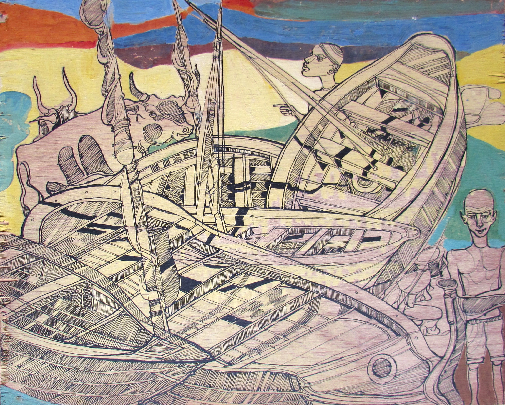

Omer Khairy
1939 – 1999
Artist Biography
Omer Khairy was born in Omdurman, Sudan. He studied art at Khartoum Polytechnic 1957-8 and then Khartoum College of Art. However, after organising an exhibition of his work at the Cultural Centre in Khartoum in 1960 Khairy dropped out of college. He then suffered a nervous breakdown in 1963 after his mother’s death and he only returned to the art scene in the early 1970s, by which time he was using an alter ego as George Edward Scuncucur – an imaginary Victorian British colonialist. In addition to his largely self-taught art, he also wrote poetry. Khairy developed a unique and immediately recognisable artistic style using black ink on paper or wood through which he depicted crowded scenes of streets and people, often in caricature. Recognition and acclaim, though only coming in the 1980s, followed. Khairy’s work is held in major Middle Eastern collections including the Barjeel and Sharjah Art Foundation collections. One drawing was displayed at Christies London in 2023 as part of the ‘Modern and Contemporary Art in the Arab World’ exhibition organised by the Barjeel Art Foundation.

Untitled